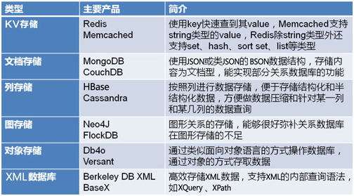
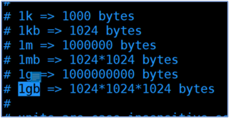
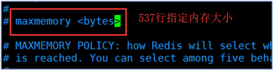
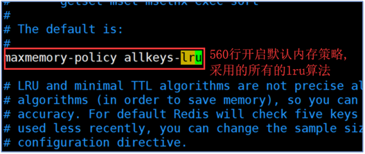

redis介绍（介绍，使用）
本文于346天之前发表，文中内容可能已经过时。
为什么要用缓存？
电商网站的行为非常特殊，大量的商品的浏览，对热门的商品，卖的好的商品，评价好的商品浏览频繁。而这部分数据遵循二八定律。只占整体的二成。既然大部分的业务访问都集中在这一小部分数据上，那么如果把这一小部分数据缓存在内存中，是不是就可以减少数据库的访问压力，从而提高整个网站的数据访问速度，改善数据库的写入性能了呢？答案是显而易见的。我们都知道数据库访问创建链接，执行查询，销毁链接是一个非常耗费资源和缓慢的过程。而大量的拦截请求直接从内存读取数据返回给用户。性能提高数百倍。
缓存是改善性能的第一手段。
什么是nosql
Nosql=no only sql 泛指非关系型数据库。
随着互联网web2.0网站的兴起，传统的关系数据库在应付web2.0网站，特别是超大规模和高并发的SNS类型的web2.0纯动态网站已经显得力不从心，暴露了很多难以克服的问题，而非关系型的数据库则由于其本身的特点得到了非常迅速的发展。NoSQL数据库的产生就是为了解决大规模数据集合多重数据种类带来的挑战，尤其是大数据应用难题。
主流的redis比较

redis简介
官网：http://redis.io
Redis是一个key-value存储系统。和Memcached类似，它支持存储的value类型相对更多，包括string(字符串)、list(链表)、set(集合)、zset(sorted set --有序集合)和hash（哈希类型）。这些数据类型都支持push/pop、add/remove及取交集并集和差集及更丰富的操作，而且这些操作都是原子性的。在此基础上，redis支持各种不同方式的排序。与memcached一样，为了保证效率，数据都是缓存在内存中。区别的是redis会周期性的把更新的数据写入磁盘或者把修改操作写入追加的记录文件，并且在此基础上实现了master-slave(主从)同步。
Redis 是一个高性能的key-value数据库。 redis的出现，很大程度补偿了memcached这类key/value存储的不足，在部分场合可以对关系数据库起到很好的补充作用。它提供了Java，C/C++，C#，PHP，JavaScript，Perl，Object-C，Python，Ruby，Erlang等客户端，使用很方便。
Redis支持主从同步。数据可以从主服务器向任意数量的从服务器上同步，从服务器可以是关联其他从服务器的主服务器。这使得Redis可执行单层树复制。存盘可以有意无意的对数据进行写操作。由于完全实现了发布/订阅机制，使得从数据库在任何地方同步树时，可订阅一个频道并接收主服务器完整的消息发布记录。同步对读取操作的可扩展性和数据冗余很有帮助。
可以充当缓存、队列等作用。
源码脱管： https://github.com/antirez/redis
redis的历史和发展
2008年，意大利的一家创业公司Merzia推出一款基于MySQL的网站实时统计系统LLOOGG，然而没过多久该公司的创始人Salvatore Sanfilippo便对MySQL的性能感到失望，于是他决定亲自为LLOOGG量身定做一个数据库，并于2009年开发完成，这个数据库就是Redis。不过Salvatore Sanfilippo并不满足只将Redis用于LLOOGG这一款产品，而是希望更多的人使用它，于是在同一年Salvatore Sanfilippo将Redis开源发布，并开始和Redis的另一名主要的代码贡献者Pieter Noordhuis一起继续着Redis的开发，直到今天。
短短几年，Redis就拥有了庞大的用户群体。Hacker News在2012年发布了一份数据库的使用情况调查，结果显示有近12%的公司在使用Redis。国内如京东、淘宝、新浪微博、街旁网、知乎网、国外如GitHub、Stack Overflow、Flickr等都是Redis的用户。
VMware公司从2010年开始赞助Redis的开发，Salvatore Sanfilippo和Pieter Noordhuis也分别在3月5月加入VMware，全职开发Redis。
Redis的特性
- 多种数据类型存储
- 字符串类型
- 散列类型
- 列表类型
- 集合类型
- 有序集合类型
- 内存存储与持久化
- 内存的读写速度远快于硬盘
- 自身提供了持久化功能（RDB、AOF两种方式）
- 功能丰富
- 可以用作缓存、队列、消息订阅/发布
- 支持键的生存时间
- 按照一定规则删除相应的键
- 简单稳定
Redis的版本规则如下：
次版本号（第一个小数点后的数字）为偶数的版本是稳定版本（2.4、2.6等），奇数为非稳定版本（2.5、2.7），一般推荐在生产环境使用稳定版本。
说明：Redis官方是不支持windows平台的，windows版本是由微软自己建立的分支，基于官方的Redis源码上进行编译、发布、维护的，所以windows平台的Redis版本要略低于官方版本。
所以使用redis推荐在linux下使用。从这也可以知道电商项目、互联网项目都是在linux上运行的。
Linux下安装Redis
注意：redis3.0之后引入了集群
mkdir –p /usr/local/src/redis
cd /usr/local/src/redis
wget http://download.redis.io/releases/redis-3.0.7.tar.gz
tar xzf redis-3.0.7.tar.gz #tar xvf redis-3.0.7.tar.gz
cd redis-3.0.7
make #下载后编译，过程稍长
make install #进行安装
make PREFIX=/usr/local/src/redis install #指定安装目录
Windows(64位)安装
Windows(64位)版本2.8.19，需要经过visualstudio编译。
https://github.com/MSOpenTech/redis
Windows(32位)版本已经不再支持。
How to build Redis using Visual Studio
You can use the free Visual Studio Community edition available at http://www.visualstudio.com/products/visual-studio-community-vs.
Open the solution file msvs\redisserver.sln in Visual Studio, select a build configuration (Debug or Release) and target (Win32 or x64) then build.
This should create the following executables in the msvs\$(Target)\$(Configuration) folder:
redis-server.exe
redis-benchmark.exe
redis-cli.exe
redis-check-dump.exe
redis-check-aof.exe
安装系统服务启动
注册服务：
redis-server --service-install redis.windows.conf --loglevel verbose
卸载服务：
redis-server --service-uninstall
启动Redis：
redis-server --service-start
停止Redis:
redis-server --service-stop
Redis持久化的两种方式
rdb
fork一个进程，遍历hash table，利用copy on write，把整个db dump保存下来。
save, shutdown, slave 命令会触发这个操作。粒度比较大，如果save, shutdown,
slave 之前crash了，则中间的操作没办法恢复。
如果采用save指令进行数据备份.,则会自动的创建一个线程用来实现数据备份.该线程启动后,会造成redis其他线程的阻塞.只有当该线程持久化完毕后,其他线程才会执行.
如果采用bgsave指令.则会开启后台线程进行数据备份.这时的数据备份不是马上执行.而是等待线程抽空自己执行.不会造成线程的阻塞.但是该操作有延时
rdb备份策略
说明:如果redis的set操作
900秒执行1次则备份一次
300秒执行10次则备份一次
60秒执行10000次则备份一次
补充:根据公司的业务逻辑可以修改备份的策略,但是时间间隔越短,则redis的性能越低.
aof
默认条件下AOF持久化文件不生效.如果将appendonly改为yes时,这时redis的持久化策略则发生改变.不会再采用RDB的模式,而是采用AOF模式.持久化文件的名称appendonly.aof是持久化文件名称.可以认为的进行修改.
把写操作指令，持续的写到一个类似日志文件里。（类似于从postgresql等数据库导出sql一样，只记录写操作）
粒度较小，crash之后，只有crash之前没有来得及做日志的操作没办法恢复。
AOF持久化策略
当AOF持久化策略采用 always时,表示实时持久化,只要有set操作就会进行持久化.性能较低.
当AOF持久化文件采用everysec时,表示每秒进行一次数据备份.性能比always要高很多.但是不如RDB性能高
当AOF持久化文件采用 no时,表示持久化的时间交给操作系统自己调用.由操作系统自己决定.
持久化文件的总结
如果对于redis中的数据完整性要求不高则采用高效的RDB模式进行持久化操作.如果对数据完整性有较高的要求采用AOF的方式(建议采用everysec)
两种区别就是，一个是持续的用日志记录写操作，crash（崩溃）后利用日志恢复；一个是平时写操作的时候不触发写，只有手动提交save命令，或者是shutdown关闭命令时，才触发备份操作。
选择的标准，就是看系统是愿意牺牲一些性能，换取更高的缓存一致性（aof），还是愿意写操作频繁的时候，不启用备份来换取更高的性能，待手动运行save的时候，再做备份（rdb）。rdb这个就更有些最终一致性（eventually consistent）的意思了。
Redis中的内存机制
说明:redis中的内存的配置不会无限的增长.当redis的内存达到一定阈值时,会自动调用内存优化策略维护内存的大小.
Redis中的内存约定
通过内存的约定可以直接使用1KB/mb/gb指定内存的大小

内存策略
1.定义内存的大小

2.内存优化策略
1)volatile-lru:
在设定过失效时间的数据中,查找最近最少使用的数据进行删除
2)allkeys-lru:
在redis中的所有的数据删除最近最少使用的数据
3)volatile-random:
在设定了超时时间的数据中随机进行删除操作
4)allkeys-random所有的key都会进行随机删除操作
5)volatile-ttl:查询将要失效的数据进行删除(改属性必须设置超时时间)
6)noeviction:如果redis中使用该策略,则不会自动的删除数据,但是如果进行set操作则会进行报错处理.

redis启动
启动配置
配置文件：redis.conf
设置模式
vi redis.conf
daemonize yes #默认为no
端口配置：
默认6379
配置数据库数量：
Redis默认开启16个数据库，不能像mysql自定义数据库名称，只能是数值，不能修改。
配置内存大小：
会生成一个和内存大小一样的文件。
maxmemory 200mb #在真实环境必须部署，否则物理内存会被耗尽。一般配置200mb/500mb/1gb/2gb。可以分散到多台服务器，和其它业务共享服务器，以充分利用资源。同时因为分散，防止单点故障，造成大量缓存失效。
maxmemory 200mb
启动
redis-server #默认找redis.conf配置文件
redis-server & #上面ctrl+c中断reis会退出，这个不会
redis-server redis6380.conf #指定配置文件，这样可以启动多个实例
注意两种启动方式的差异
ps -ef|grep redis
root 3511 1 0 16:29 ? 00:00:01 redis-server *:6379
root 3515 1 0 16:29 ? 00:00:01 redis-server 127.0.0.1:6380
注释掉redis.conf配置文件中的48行；# bind 127.0.0.1 ::1即可
版本
redis-server –v
Redis server v=3.2.5 sha=00000000:0 malloc=jemalloc-4.0.3 bits=64 build=e6c4c3113548f6b0
redis-cli –v
设置访问密码
默认没有密码，可以随意访问。redis速度相当快，在一个较好的服务器下，外部用户每秒可以进行15w此的密码尝试，这意味着必须指定非常强大的密码来防止暴力破解。
如果要加，打开redis.conf的
requirepass 123456 #480行，设置请求密码，这样访问时都需要先登录
127.0.0.1:6379>auth 123456 #客户端访问方式
jedis.auth(“123456”); #jedis访问方式
详细信息
redis-cli
127.0.0.1:6379> info #查看当前redis节点的详细配置信息
赏
 支付宝打赏
支付宝打赏
 微信打赏
微信打赏
支付宝打赏
微信打赏
如果文章对你有帮助，欢迎点击上方按钮打赏作者